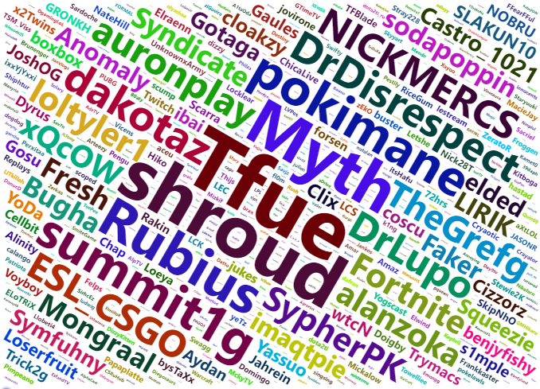

Proyectos Personales
Aquí puedes ver algunos de los proyectos en los que he trabajado, aplicando técnicas avanzadas de análisis de datos y machine learning.
Clasificador de Autos SUV
Red Neuronal Convolucional

Este modelo utiliza una red neuronal convolucional (CNN) para clasificar imágenes de autos en dos categorías: SUV y otros tipos de autos. La CNN fue entrenada con una base de datos de imágenes de vehículos, aprendiendo a identificar características visuales distintivas que diferencian a los SUVs del resto de los vehículos. Las redes neuronales convolucionales son particularmente eficaces para tareas de clasificación de imágenes debido a su capacidad para capturar y reconocer patrones complejos en los datos visuales.
Clasificador de Correos SPAM
Regresión Logística y Gaussian Naive Bayes

Este modelo está diseñado para clasificar correos electrónicos como SPAM o no SPAM utilizando dos enfoques de aprendizaje automático: regresión logística y Gaussian Naive Bayes. La base de datos utilizada para este modelo es tabular y fue obtenida de una fuente en línea. La regresión logística es un modelo lineal que estima la probabilidad de que un correo sea SPAM basado en las características del texto, mientras que el Gaussian Naive Bayes asume que las características siguen una distribución normal y utiliza esta suposición para clasificar los correos electrónicos. La combinación de ambos modelos proporciona una robusta capacidad de clasificación.
Streamers más populares de Twitch del 2020
Análisis exploratorio en R
Este proyecto analiza los 1000 streamers más populares de Twitch en 2020 para identificar las variables que influyen en el número de seguidores. Los datos incluyen tiempo de visualización y transmisión, pico y promedio de espectadores, seguidores ganados, visualizaciones, patrocinadores, contenido explícito y idioma.
Se realizaron análisis descriptivos y visualizaciones de datos para entender las distribuciones y relaciones entre variables. Se usaron modelos de regresión múltiple para determinar cómo estas variables impactan en el número de seguidores.
Los resultados muestran que el tiempo de visualización, el promedio de espectadores y el idioma de transmisión son factores clave que afectan la cantidad de seguidores. El modelo final proporciona insights valiosos para aquellos que buscan aumentar su audiencia en Twitch.